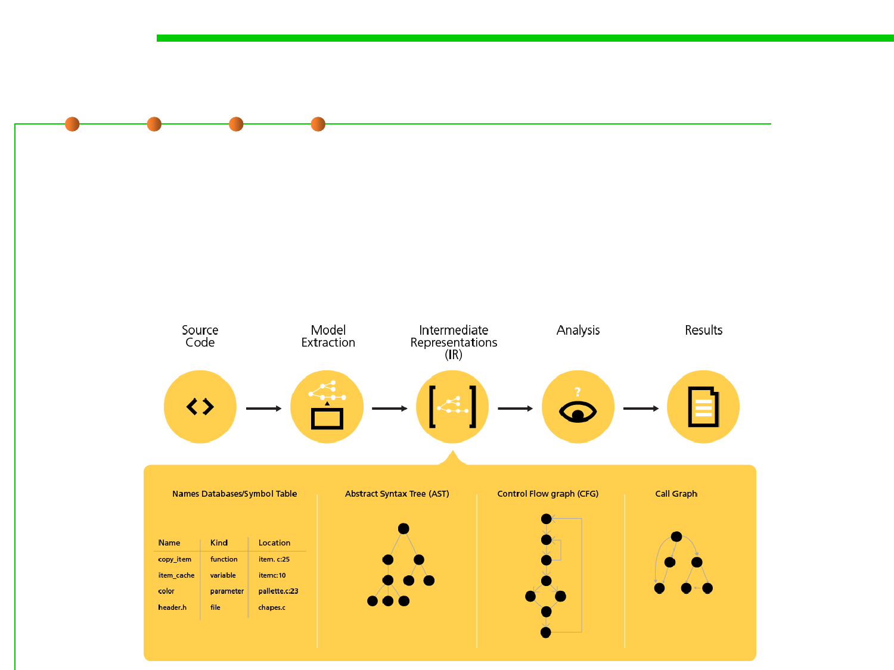

2.2 Process, Systems, and Tools of Software Construction
Review and static analysis/checking
▪ Code review is systematic examination (peer review) of source code.
– It is intended to find mistakes overlooked in the initial development phase,
improving the overall quality of software.
– Reviews are done in various forms such as pair programming, informal
walkthroughs(走查), and formal inspections.